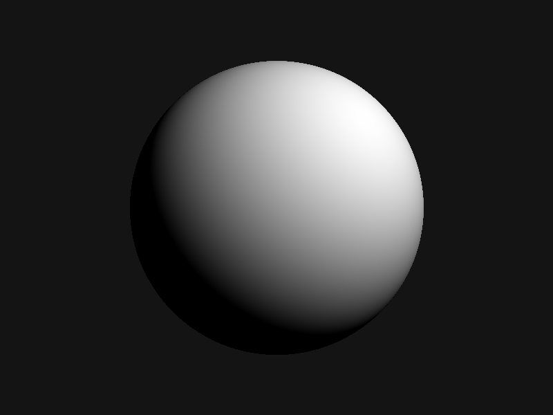
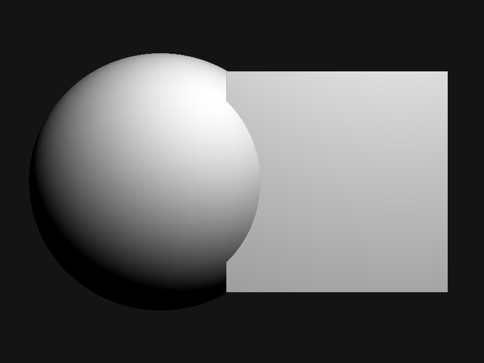
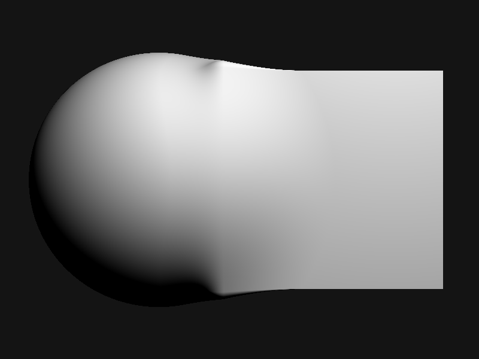
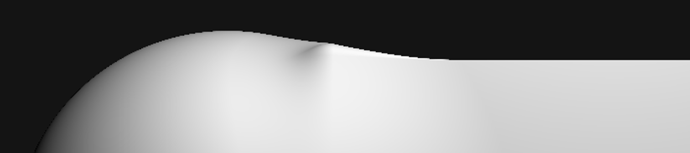
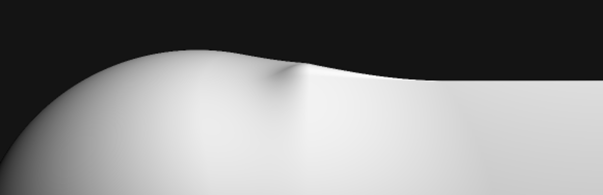

I wanted to understand raymarching by actually building one, not by reading
about it. No engine, no shader language, no graphics library. Just plain
Java, a BufferedImage, and a function that answers one question: how far
is this point from the nearest surface.
That question turns out to be almost the whole renderer. The rest is
walking toward the answer.
What a distance field actually is
A signed distance function takes a point in space and returns a single
number: how far that point is from the nearest surface, negative if the
point is inside the shape, positive if it's outside. For a sphere, that's
about as simple as math gets:
sdSphere(p, center, radius) = length(p - center) - radius
A box is less obvious (the nearest surface depends on which side, edge, or
corner you're closest to), but it's still just arithmetic, no
triangles, no meshes. Inigo Quilez's
list of distance functions
is where these formulas actually come from. Both my sdSphere and sdBox
are his, translated line for line into Java.
That question turns out to be almost the whole renderer. The rest is walking toward the answer.
Opening
Walking along the ray
Traditional raytracing solves for exact intersections between a ray and
geometry. Raymarching cheats in a much lazier, much more general way,
called sphere tracing: at every step, ask the distance field how far away
the nearest surface is, then jump forward by exactly that much. Since
nothing is closer than that distance, in any direction, the jump is always
safe. Repeat until the distance is close enough to zero to call it a hit,
or the ray has travelled so far it's clearly hit nothing.
distTravelled = 0
repeat up to maxSteps:
p = rayOrigin + rayDir * distTravelled
d = scene(p)
distTravelled += d
if d < surfaceThreshold or distTravelled > maxDist: stop
Point a grid of these rays out of a virtual camera, one per pixel, shade
whatever they hit, and there's an image. First real output, one sphere,
one light:

The first thing that rendered. One sphere, one point light, plain diffuse shading. Sphere tracing already works.
The shading itself needed one more piece: the surface normal at the hit
point. There's no mesh to pull a normal from, so I estimated it by nudging
the point slightly along each axis and checking how the distance value
changes in response. That gradient points straight away from the surface,
which is exactly the normal.
A second shape, and a seam
One shape gets old fast. Adding a box next to the sphere just means
combining two distance fields into one scene function, and the simplest
way to combine them is to take whichever is closer at any given point:
scene(p) = min(sdSphere(p), sdBox(p))
That works, technically. It also produces a hard, visible seam exactly
where the two distance fields cross over:

Plain min() of two SDFs. Correct, and correctly ugly at the boundary.
Blending shapes smoothly
The fix is a smooth minimum instead of a plain one: rather than snapping
to whichever shape is closer, blend between them over some small zone
around where they'd otherwise cross. Inigo Quilez's
smooth minimum article is where I
got this from, and the whole function is small enough to write out in
full:
smin(a, b, k):
h = max(k - abs(a - b), 0) / k
return min(a, b) - h*h*k / 4
Swap min for smin in the scene function and the same two shapes merge
into one continuous surface, like they were always a single piece of
material:

Same sphere, same box, smin() instead of min(). One organic blob instead of two shapes colliding.
There's still a faint crease near the top, right where the blend zone
runs out of room, but it reads as a fold in the surface rather than a
seam. That's the whole difference a few lines of arithmetic can make.
steps -
The same two shapes, the same scene() from above - min() on the left button gives the hard seam, smin() gives the smooth blend. Click anywhere in the frame to cast a ray from the camera point (bottom left) toward the click: each circle is the distance field's answer at that step, the radius that's safe to jump by in any direction. The ray jumps by exactly that much, asks again, and the circles shrink until it lands on a surface or gives up.
Jagged edges, then not
Zoomed in, the edges were rough. Each pixel was sampling the scene at
exactly one point, so a curve crossing a pixel either counted as fully in
or fully out, no in-between, which is what a staircase pattern along every
edge looks like:

One sample per pixel. The curve is smooth; the pixels sampling it are not.
The fix is the oldest trick in rasterization: sample each pixel more than
once, at slightly different sub-pixel offsets, and average the results
before writing the final color.
for each of 4 sub-pixel offsets in a 2x2 grid:
trace a ray through that offset
accumulate its color
write average(accumulated colors)
Four samples in a fixed quadrant pattern was enough to soften the
staircase into a clean curve:

Same edge, same camera, four samples per pixel instead of one. The steps are gone.
What 168 lines gets you
Sphere tracing, two kinds of signed distance field, a smooth blend between
them, surface normals estimated from the distance field itself, diffuse
lighting, and antialiasing. No mesh ever entered this program. Every
surface that shows up in these images is just a function, evaluated
however many times the camera happened to ask.
It's also obviously a starting point, not a renderer. There are no
shadows (nothing stops a point from being lit even when something else is
in the way), no reflections, and exactly two shapes. All of that is more
distance functions and more math on top of the same loop, not a different
approach. The loop itself, walk forward by the safe distance, ask again,
stop when close enough, turned out to be the entire trick.
iquilezles.org is where nearly everything
above actually comes from: distance functions, the smooth minimum, and
most of what the raymarching community still builds on today.